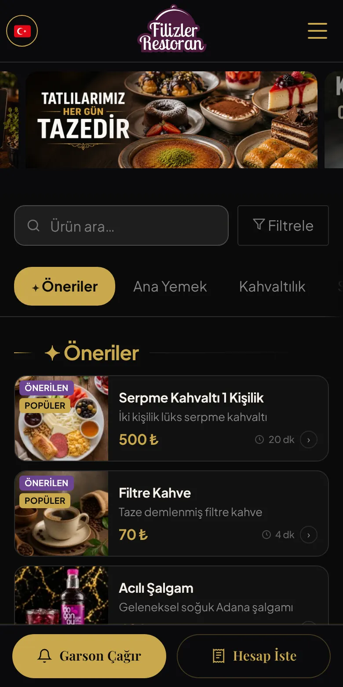
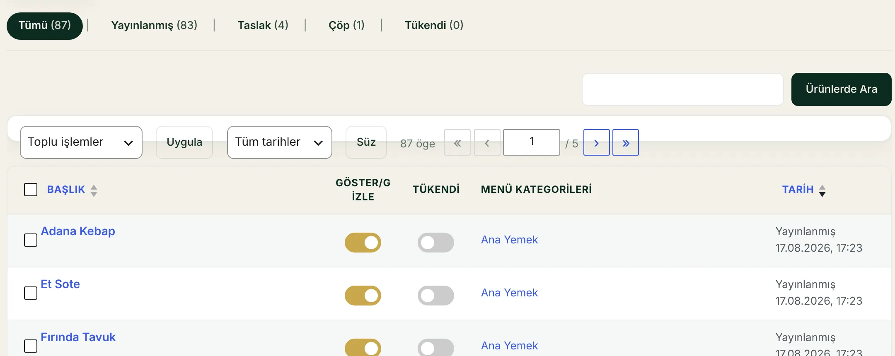
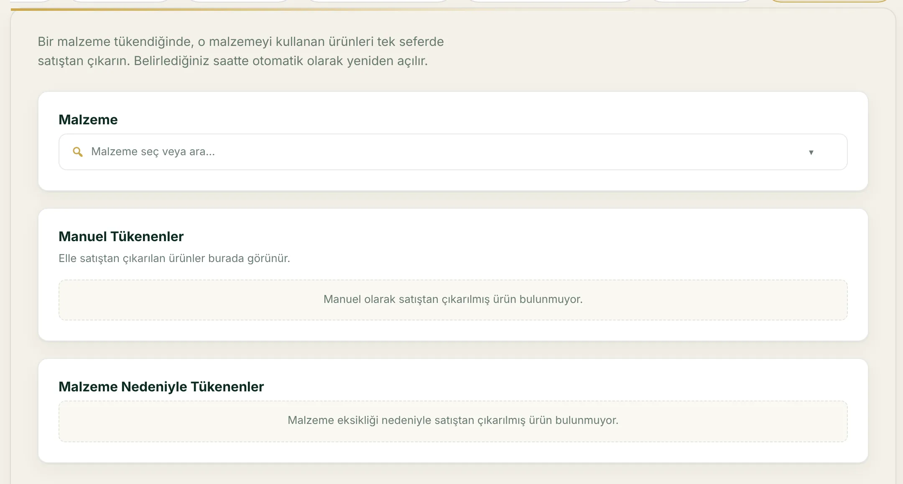
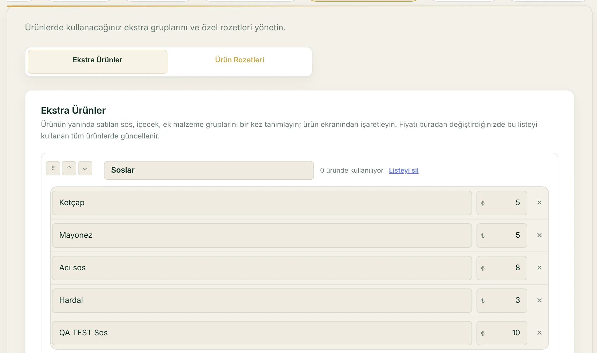
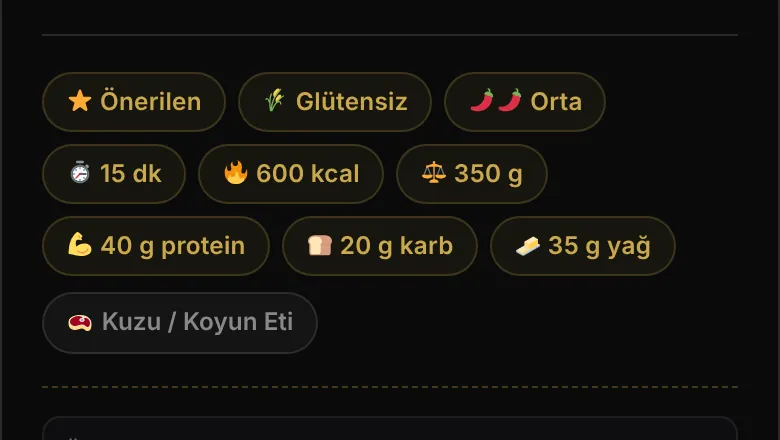

QR MENÜ YÖNETİMİTüm paketlerde
QR menünüz tek panelden, her an güncel.
Fiyat, stok ve ürün bilgisini panelde değiştirin; misafir QR kodu okutunca güncel menüyü telefonunda görsün. Baskı yok, PDF yenileme yok.
- Ürün, fiyat ve kategori tek panelde
- Kampanya ve Popüler, Yeni gibi rozetler
- Kahvaltı gibi menüler kendi saatinde açılır

Gerçek ekran görüntüsü · örnek restoran verisi
EKSİĞİ GÖRÜN
Menünüzde bunlar yaşanıyorsa, eksik olan bir yönetim paneli.
-
BUGÜN YAŞADIĞINIZFiyat değişince menüler yeniden basılıyor.
RESTORAN MENÜ İLEFiyatı panelde güncellersiniz; misafir bir sonraki açılışta yeni fiyatı görür.
-
BUGÜN YAŞADIĞINIZBiten ürünü misafir sipariş etmeye çalışıyor.
RESTORAN MENÜ İLEÜrünü tükendi işaretlersiniz; menüde etiketiyle kalır, sepete eklenemez. İsterseniz belirlediğiniz saatte yeniden satışa açılır.
-
BUGÜN YAŞADIĞINIZAlerjen, kalori ve içerik soruları garsona düşüyor.
RESTORAN MENÜ İLEÜrün detayında 14 alerjen tanımı, kalori, gramaj ve hazırlanış süresi görünür. Bilgiyi siz girersiniz.
NASIL ÇALIŞIR
Panelde değiştirin, masada görünsün.
-
Fiyatı bir kez yazın, her masada değişsinFiyat, içerik ve stok tek panelden
Ürünü bir kez düzenleyin; basılı menü yenilemeye gerek kalmaz.
Ürünün fiyatını, kalorisini ve alerjenlerini panelde güncelleyip kaydedin. Basılı menü yenilenmez; misafir yeni hâlini bir sonraki açılışta görür.Ad, fiyat, kategori, fotoğraf, kalori ve 14 alerjen aynı ekranda. Kaydettiğiniz an menü güncellenir; misafir yeni fiyatı bir sonraki açılışta görür. Yüzlerce ürünü CSV ile tek seferde yükleyebilirsiniz.
- Ad, fiyat, kategori ve fotoğraf tek ekranda
- 14 alerjen ve besin değerleri
- Yüzlerce ürünü CSV ile tek seferde yükleyin
-
QR okutulur, menü uygulamasız açılırQR okutulur, menü uygulamasız açılır
Misafir indirme yapmadan, telefonunun tarayıcısında menüye girer.
Misafir masadaki kodu okutur; menü telefonun tarayıcısında açılır. Kategoriler, ürün fotoğrafları, fiyatlar ve Önerilen, Popüler gibi rozetler ilk ekranda.Kategoriler, ürün fotoğrafları ve güncel fiyatlar ilk ekranda. Önerilen, Popüler gibi rozetler öne çıkarmak istediğiniz ürünleri işaretler; hazırlanış süresi her ürünün yanında yazar.
- Masadaki QR kodu okutması yeterli
- Uygulama indirmek gerekmez
- Her açılışta menünün güncel hali gelir
-
Alerjenini çıkarır, menüyü kendine göre dizerAlerjenini çıkarır, menüyü kendine göre sıralar
Uzun menüde aradığını garsona sormadan bulur.
Glüten, süt, fındık gibi 14 alerjenden istediğini hariç tutar; menüyü fiyata, proteine, karbonhidrata ya da acılığa göre sıralar. Biten ürün etiketiyle görünür, sepete eklenemez.Glüten, süt, fındık gibi 14 alerjenden istediğini hariç tutar; menüyü fiyata, proteine, karbonhidrata ya da acılığa göre sıralar. Biten ürün etiketiyle menüde kalır, sepete eklenemez.
- 14 alerjene göre eleme
- Fiyat, protein, karbonhidrat ve acılığa göre sıralama
- Biten ürün menüde etiketiyle kalır
-
Garsona sormadan ürünün içini görürÜrünün içini garsona sormadan görür
Besin değerleri ve alerjenler ürün detayında, etiket olarak.
Kalori, protein, karbonhidrat, yağ, gramaj, hazırlanış süresi, acılık, et menşei ve alerjen bilgisi ürün detayında etiket olarak durur. Porsiyon ve ekstra seçimi aynı ekranda.Kalori, protein, karbonhidrat, yağ, gramaj, hazırlanış süresi, acılık ve et menşei tek ekranda. Porsiyon ve ekstra seçimi de burada; bilgileri siz girersiniz, menü olduğu gibi gösterir.
- Kalori, protein, karbonhidrat ve yağ
- Gramaj, hazırlanış süresi ve acılık
- Alerjen ve et menşei etiketleri
Gerçek ekran görüntüsü · örnek restoran verisi
ÖZELLİKLER
Restoran Menü ile neler yapabilirsiniz?

Restoran Menü
Fiyat ve ürünleri tek panelden güncelleyin; menü baskısız güncel kalsın.



- Kampanya ve rozetlerToplu indirim uygulayın, kaldırınca fiyatlar eskisine döner; Popüler, Yeni gibi rozetler ekleyin.

Alerjen, kalori ve filtreÜrün detayında 14 alerjen ve besin bilgisi görünür; misafir arar, filtreler, sıralar.
TÜM ÖZELLİKLER
Restoran Menü ile yapabildiğiniz her şey
-
Kategori ve ürünler
Bölümleri ve ürünleri panelden ekler, düzenler, gizlersiniz.
-
Ürün bilgileri
Kalori, gramaj, besin değerleri, hazırlanış süresi ve acılık.
-
Alerjen ve malzeme
14 hazır alerjen tanımı; malzemeleri ayrıca tanımlarsınız.
-
Porsiyon, ekstra, kombin
“Büyük +40 ₺”, “sos +10 ₺” ve tek fiyatlı kombin ürün.
-
Tükendi ve servis saati
Biten ürün etiketle kalır; kategoriye saat kuralı yazılır.
-
Kampanya ve rozetler
Geri alınabilir toplu indirim; Popüler, Yeni gibi rozetler.
-
Arama, filtre, sıralama
Misafir alerjen, kalori ve fiyata göre filtreler, sıralar.
-
Aktarma, yedek, görünüm
CSV aktarım, JSON yedek ve 5 hazır renk paleti.
QR Menu Official • İşletmeciler
Kullanan işletmeler ne diyor?
Menü yönetiminde günlük işleyişin nasıl değiştiğini onlardan dinleyin.
SIK SORULAN SORULAR
Aklınıza takılanlar
Cevabı burada bulamazsanız bize yazın; menünüzü birlikte gözden geçirelim.
QR menüde ürün nasıl eklenir?
Yönetim panelinde kategori seçilir veya oluşturulur; ardından ürün kartına ad, açıklama, fiyat ve isteğe bağlı alerjen, görsel gibi alanlar girilir. Kaydettiğiniz anda dijital menüde görünür (gizli veya tükendi işaretli değilse). Restoran Menü modülünde adım adım anlatılır.
QR menüde fiyat nasıl değiştirilir?
Ürünün paneldeki fiyat alanı güncellenir; baskı menüye gerek kalmadan müşteri yeni fiyatı görür. Porsiyon ve ekstra farkları ayrı tanımlanabilir; kampanya veya indirim rozetleri de panelden yönetilir.
Tükenen ürün menüde nasıl gösterilir?
Ürün panelde tükendi olarak işaretlenebilir; menüde görünür kalır ancak sepete eklenemez ve müşteriye uygun etiket gösterilir. İsterseniz ürünü tamamen gizleyerek menüden kaldırabilirsiniz.
Menüye CSV ile ürün aktarılabilir mi?
Evet. Ürün listesi noktalı virgül veya virgül ayraçlı CSV ile toplu yüklenebilir; aynı başlık ve kategori anahtarıyla eşleşen satırlar güncellenir, yeni satırlar eklenir. Geçersiz fiyatlı satırlar atlanır; sonuç ekranında kaç kaydın eklendiği veya güncellendiği bildirilir.
QR menüde alerjen bilgileri gösterilebilir mi?
Evet. Ürünlere tanımlı alerjenler menüde gösterilebilir; bilgi tamamen sizin girdiğiniz veriye dayanır. Yanlış veya eksik alerjen riski için mutfak ve menü verinizi düzenli güncellemeniz gerekir.
QR menü kullanmak için uygulama gerekir mi?
Müşteri tarafında uygulama indirmek gerekmez. Menü, telefonun kamerası veya QR okuyucusuyla tarayıcıda açılır. İşletme tarafında yönetim WordPress yönetim paneli üzerinden yapılır; servis ekibi için ayrı servis paneli ekranı kullanılır.
CANLI DEMO VE PAKETLER
Restoran Menü tüm paketlerde: işletmenize uygun planı seçin.
Menü yönetimi üç paketin üçünde de var. Fiyatlar aylık; yıllık ödemede 12 aylık kullanım 10 aylık ücrete denk gelir. Sepetle sipariş Pro ve Plus paketindedir. Hangisinin size uyduğundan emin değilseniz menünüzü birlikte gözden geçirelim.
- TemelDijital QR menü749 ₺/ayDahil
- ProDijital menü ve masa servisi1.490 ₺/ayDahil
- PlusMenü, servis ve işletme verisi2.990 ₺/ayDahil
- Aylık üyelikte taahhüt yok, istediğiniz zaman iptal
- İlk 14 gün içinde iade (alan adı ve hosting maliyeti düşülür)
- Yıllık üyelikte kurulum ücreti yok